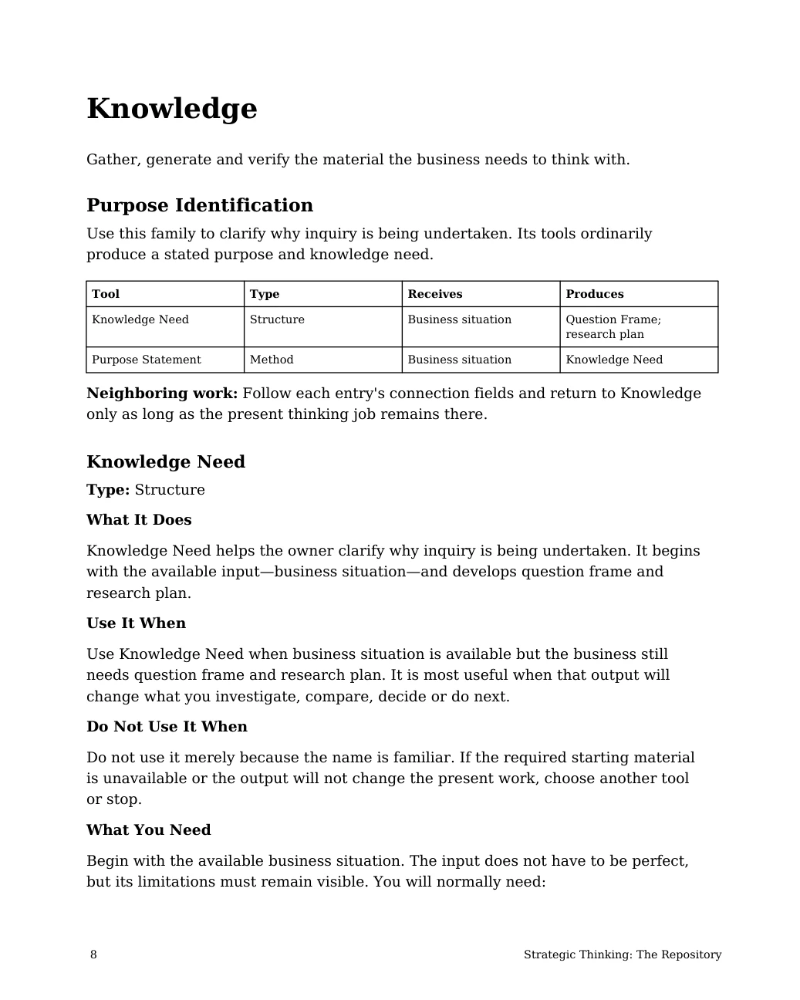

Knowledge need: purpose and fit
Manuscript page 8

Read page text
Knowledge Gather, generate and verify the material the business needs to think with. Purpose Identification Use this family to clarify why inquiry is being undertaken. Its tools ordinarily produce a stated purpose and knowledge need. Tool Type Receives Produces Knowledge Need Structure Business situation Question Frame; research plan Purpose Statement Method Business situation Knowledge Need Neighboring work: Follow each entry's connection fields and return to Knowledge only as long as the present thinking job remains there. Knowledge Need Type: Structure What It Does Knowledge Need helps the owner clarify why inquiry is being undertaken. It begins with the available input—business situation—and develops question frame and research plan. Use It When Use Knowledge Need when business situation is available but the business still needs question frame and research plan. It is most useful when that output will change what you investigate, compare, decide or do next. Do Not Use It When Do not use it merely because the name is familiar. If the required starting material is unavailable or the output will not change the present work, choose another tool or stop. What You Need Begin with the available business situation. The input does not have to be perfect, but its limitations must remain visible. You will normally need: 8 Strategic Thinking: The Repository